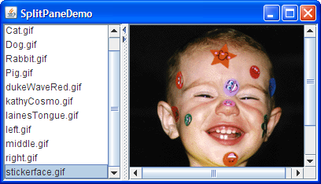
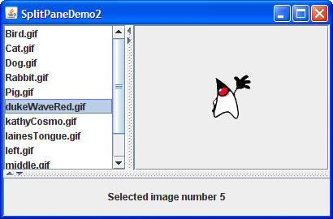

Lección: Usando Componentes Swing
Sección: Cómo Usar Varios Componentes
Como Usar Paneles de División
Un
JSplitPane
visualiza dos componetes, o lado a lado o uno encima del otro. Al arrastrar el divisor que aparece entre los
componentes, el usuario puede especificar qué parte del área total del panel de división va a cada componente.
Puede dividir el espacio de pantalla entre tres o más componentes colocando paneles de división dentro de paneles
de división, como se describe en Anidar Paneles de División.
Si quiere crar un panel de división con un número arbitrario de componentes, debería echarle un vistazo al artículo de Hans Muller's , MultiSplitPane: División sin anidar.
En vez de añadir los componentes de interés directamente a un panel de división, a menudo coloca cada componente en un panel de desplazamiento. Luego coloca los paneles de desplazamiento dentro del panel de división. Esto le permite al usuario ver cualquier parte de un componente de interés, sin requerir que el componente ocupe mucho espacio en la pantalla o se adapte para mostrarse en cantidades variables de espacio de pantalla.
Aquí tiene una foto de una aplicación que usa un panel de división para visualizar una lista y una imagen lado a lado:

Pruebe esto:
-
Pulse el botón Lanzar para ejecutar SplitPaneDemo usando
Java™ Web Start (
descargue KDJ 7 o posterior). Alternativamente, para compilar y ejecutar el ejemplo usted mismo,
consulte el índice de ejemplos.

- Arrastre la línea con hoyuelos que divide la lista y la imagen a la izquierda o a la derecha. Intente arrastrar el divisor hasta el borde de la ventana.
- Haga clic en las pequeñas flechas del divisor para ocultar/expandir el componente izquierdo o derecho.
Abajo está el código de SplitPaneDemo que crea y configura el panel de división.
//Crea un panel de división con los dos paneles de desplazamiento dentro.
splitPane = new JSplitPane(JSplitPane.HORIZONTAL_SPLIT,
listScrollPane, pictureScrollPane);
splitPane.setOneTouchExpandable(true);
splitPane.setDividerLocation(150);
//Suministra los tamaños mínimos para los dos componentes en el panel de división
Dimension minimumSize = new Dimension(100, 50);
listScrollPane.setMinimumSize(minimumSize);
pictureScrollPane.setMinimumSize(minimumSize);
El constructor usado por este ejemplo toma tres argumentos. El primero indica la dirección de la división. Los
otros argumentos son los dos componentes a colocar en el panel de división. Consulte
Configurar los Componentes en el Panel de División para más información sobre los métodos
de JSplitPane que configuran los componentes dinámicamente.
El panel de división en este ejemplo está dividido horizontalmente ─ los dos componentes aparecen
uno al lado del otro ─ como se especifica en el argumento JSplitPane.HORIZONTAL_SPLIT
al constructor. El panel de división ofrece otra opción, especificada con
JSplitPane.VERTICAL_SPLIT, que coloca un componente encima del otro. Puede cambiar la dirección de
la división después de que el panel de división haya sido creado con el método setOrientation.
Dos pequeñas flechas aparecen en lo alto del divisor en el panel de división del ejemplo. Estas flechas permiten
al usuario colapsar (y luego expandir) cualquiera de los componentes con un sólo clic. La apariencia actual
determina si estos controles aparecen por defecto. En la apariencia Java, están deshabilitados por defecto.
(Note que no todas las apariencias soportan esto). El ejemplo los habilita usando el método
setOneTouchExpandable.
El rango del divisior de un panel de división se determina en parte por los tamaños mínimos de los componetes dentro del panel de división. Vea Colocación del Divisor y Restricción de su Rango para más detalles.
El resto de esta sección cubre estos temas:
- Establecer los Componentes en un Panel Dividido
- Colocación del Divisor y Restricción de su Rango
- Anidar Paneles de División
- La IPA del Panel Dividido
- Ejemplos que Usan Paneles de División
Establecer los Componentes en un Panel Dividido
Un programa puede configurar dos componentes en un panel de divisón dinámicamente con estos cuatro métodos:
setLeftComponentsetRightComponentsetTopComponentsetBottomComponent
Puede usar cualquiera de estos métodos en cualquier momento con independencia de la dirección actual del panel
de división. Las llamadas a setLeftComponent y setTopComponent son equivalentes y
establecen el componente especificado arriba o en la posición izquierda, dependiendo de la orientación de
división actual del panel de división. De forma similar, las llamadas a setRightComponent y
setBottomComponent son equivalentes. Estos métodos reemplazan cualquier componente que ya esté en
esa posición con uno nuevo.
Como otros contenedores, JSplitPane soportan el método add. Los paneles de división
colocan el primer componente añadido en la posición de arriba o a la izquierda. El peligro de usar
add es que puede llamarla inadvertidamente demasiadas veces, en cuyo caso el gestor de diseño del
panel de división lanzará una excepción de aspecto bastante esotérico. Si está usando el método
add y el panel de división está ya lleno, primero necesita eliminar los componentes existentes
con remove.
Si coloca sólo un componente en un panel de división, el divisor se atascará en el lado derecho o en la parte inferior del panel dividido, dependiendo de su dirección de división.
Colocación del Divisor y Restricción de su Rango
Para hacer que un panel de divisón funcione bien, a menudo necesita establecer los tamaños mínimos de los componentes en panel de división, como también el tamaño preferido del panel de división o de los componentes contenidos. Elegir qué tamaños debe establecer es un arte que requiere entender cómo el tamaño preferido de un panel de división y la ubicación del divisor se determinan. Antes de que entremos en detalles, echemos otro vistazo a SplitPaneDemo. O, si tiene prisa, puede saltar a la lista de reglas.
Pruebe esto:
-
Pulse el botón Lanzar para ejecutar SplitPaneDemo usando
Java™ Web Start (
descargue KDJ 7 o posterior). Alternativamente, para compilar y ejecutar el ejemplo ustes mismo,
consulte el índice de ejemplo.
Ya que el tamaño del marco de la demostración es establecido usando el métodopack, el panel de división se encuentra en su tamaño preferido, que SplitPaneDemo pasa a establecer explícitamente. El divisor es automáticamente colocado de format que el componente izquierd se encuentra con su ancho preferido y todo el espacio restante va para el componente derecho. -
Haga la ventana más ancha.
El divisor permanece donde está, y el espacio adicional va al componente de la derecha. -
Haga la ventana notablemente más estrecha que cuando apareció por primera vez ─ quizás
dos veces tan ancho com el componente izquierdo.
De nuevo, el tamaño del componente izquierdo y la posición del divisor permanecen igual. Sólo el tamaño del componente derecho cambia. -
Haga la ventana lo más estrecha posible.
Asumiendo que la ventana usa la apariencia Java y las decoraciones proporcionadas por el usuario, no puedo hacer la ventana más pequeña que el tamaño mínimo del panel de división, que se determina por el tamaño mínimo de los componentes contenidos en el panel de división. SplitPaneDemo establece el tamaño mínimo de los componentes contenidos explícitamente. -
Haga la ventana más ancha, y luego arrastre el divisor tanto como sea posible a la derecha.
El divisor va sólo tan lejos como el tamaño mínimo del componente derecho se lo permite. Si arrastra el divisor a la izquierda, verá que también respeta el tamaño mínimo del componente izquierdo.
Ahora que ha visto el comportamiento por defecto de los paneles de división, podemos decirte lo que sucede entre bastidores y cómo puede afectarlo. En esta debate, cuando nos referimos al tamaño mínimo o preferido de un componente, a menudo queremos decir el el ancho mínimo o preferido del componente si el panel de división es horizontal, o su altura mínima o preferida si el panel de división es vertical.
Por defecto, el tamaño preferido de un panel de división y la ubicación del divisor son inicializados de forma que los dos componentes en el panel de división están en sus tamaños preferidos. Si el panel de división no se visualiza en su tamaño preferido y el programa no ha establecido la ubicación del divisor explícitamente, entonces la posición inicial del divisor (y así los tamaños de los dos componentes) dependen de una propiedad del panel de división llamada resize weight. Si el panel dividido está inicialmente en su tamaño preferido o más grande, entonces los componentes contenidos comienzan en sus tamaños preferidos, antes de ajustar para cambiar el tamaño del peso. Si el panel de división es inicialmente demasiado pequeños para mostrar ambos componentes en sus tamaños preferidos, entonces comienzan en sus tamaños mínimos, antes del ajuste del tamaño del peso.
La propiedad 'resize weight' del panel de división tiene un valor entre 0.0 y 1.0 y determina cuánto espacio es distribuido entre los dos componentes contenidos cuando se estable el tamaño del panel de división ─ ya sea programáticamente o por el usuario redimensionando el panel de división (ampliando su ventana contenedora, por ejemplo). La propiedad 'resize weight' de un panel de división es 0.0 por defecto, indicando que el tamaño del componente de la izquierda o arriba es fijo, y que el componente de la derecha o de abajo ajusta si tamaño para ajustar en el espacio remanente. Establecer 'resize weight' a 0.5 divide cualquier espacio extra o perdido eventualmente entre los dos componentes. Establecer 'resize weight' a 1.0 hace que el componente de la derecha o abajo permanezca fijo. La propiedad 'resize weight' no tiene efecto, sin embargo, cuando el usuario arrastra el divisor.
El usuario puede arrastrar el divisor a cualquier posición siempre y cuando ninguno de los componentes contenidos se reduzcan por debajo de su tamaño mínimo. Si el divisor tiene botones de un toque, el usuario puede usarlos para hacer que el divisor se mueva completamente a un sitio o a otro ─ sin que importen los tamaños mínimos de los componentes.
Ahora que conoce los factores que afectan el tamaño del panel de división y la ubicación del divisor, aquí tiene algunas reglas para hacer que funcionen bien:
-
Para asegurar que el divisor puede ser arrastrado cuando el panel de división se encuentre en su tamaño
preferido, asegúrese de quel el tamaño mínimo de uno o de ambos componentes contenidos sea más pequeño que
el tamaño preferido de los componentes contenidos. Puede establecer el tamaño mínimo de un componente o
invocando
setMinimumSizesobre él o sobreescribiéndo su métodogetMinimumSize. Por ejemplo, si quiere que el usurio sea capaz de arrastrar el divisor a ambos lados :Dimension minimumSize = new Dimension(0, 0); leftComponent.setMinimumSize(minimumSize); rightComponent.setMinimumSize(minimumSize); -
Para garantizar que ambos componentes contenidos aparezcan, asegúrese de que el panel de división esté
inicialmente por encima de su tamaño preferido, o de que los tamaños mínimos de los componentes contenidos
son mayores que cero.
Esto generalmente debería suceder si se le da el tamaño preferido al panel dividido, que depende del gestor de diseño que contiene el panel dividido. Otra opción es establecer explícitamente un tamaño preferido en el panel de división que sea mayor que los tamaños de los componentes contenidos.
-
Si quiere que el componente derecho o de abajo permanezca con el mismo tamaño y que el componente izquierdo
o de arriba sea flexible cuando el panel de división se haga más grande, establezca 'resize weight' a 1.0.
Puede hacer esto invocando
setResizeWeight:splitPane.setResizeWeight(1.0); -
Si desea que ambas mitades del panel dividido se compartan en el espacio extra o eliminado del panel
dividido, configure 'resize weight' a 0.5
splitPane.setResizeWeight(0.5); -
Asegúrese de que cada componente contenido en un panel de divisón tenga un tamaño preferido razonable. Si
el componente es un panel que usa un gestor de diseño, puede simplemente usar el valor que devuelve. Si el
componente es un panel de desplazamiento, tiene unas cuantas opcones. Puede invocar el método
setPreferredSizeen el panel de desplazamiento, invocar el método apropiado en el componente dentro del panel de desplazamiento (tal como el métodosetVisibleRowCountparaJListoJTree). - Asegúrese de cada componente contenido por un panel de división pueda mostrarse a sí mismo razonablemente en cantidades variables de espacio. Por ejemplo, los paneles que contienen componentes múltiples deberán usar gestores de diseño que usan el espacio extra de forma razonable.
-
Si quiere establecer el tamaño de los componentes contenidos a algo distinto que sus tamaños preferidos,
use el método
setDividerLocation. Por ejemplo, hacer el componente izquierdo 15o píxeles más ancho:Aunque el panel de división hace todo los posible para respetar la ubicación inicial del divisor (150 en este caso), una vez que el usuario arrastra el divisor puede que ya no sea posible arrastrar al tamaño especificado por el programa.splitPane.setDividerLocation(150 + splitPane.getInsets().left);Para hacer que el componente correcto tenga 150 píxeles de ancho:
Si el panel de división está aún visible, puede establecer la ublicación del divisor como un porcentaje del panel de división. Por ejemplo para hacer que el 25& del espacio vaya a la izquierda/arriba:splitPane.setDividerLocation(splitPane.getSize().width - splitPane.getInsets().right - splitPane.getDividerSize() - 150);splitPane.setDividerLocation(0.25);Note que esto está implementado en términos del tamaño actual y por lo tanto, realmente solo es útil si el panel dividido está visible.
-
Para diseñar el panel dividido como si acabara de salir, probablemente recolocando el divisor en el proceso, invoque
resetToPreferredSizes()sobre el panel de división.
Nota: Simplemente cambiendo los tamaños preferidos de los componentes contenidos ─ incluso si invocarevalidatedespués ─ no es suficiente para hacer que el panel de división se extienda de nuevo. También debe invocarresetToPreferredSizes.
La siguiente captura muestra un ejemplo llamado SplitPaneDividerDemo que muestra los tamaños de los componentes del panel dividido y la ubicación del divisor.

Como SplitPaneDemo, SplitPaneDividerDemo presenta un panel de división horizontal con botones de un toque. SplitPaneDividerDemo tiene las siguientes características adicionales:
- La propiedad resize weight del panel de división se establece explícitamente (a 0.5).
- El panel de división es visualizado en su tamaño preferido predeterminado.
-
Un botón Reset en la parte inferior de la ventana invoca
resetToPreferredSizesen el panel de división. -
Los componentes en el panel de división son instancias de una subclase personalizad de
JComponentllamadaSizeDisplayer. UnSizeDisplayervisualiza texto opcional sobre el fondo de una imagen difuminada (y también opcional). Más importante aún, tiene rectángulos que muestran sus tamaños preferidos y mínimos. -
SplitPaneDividerDemo configura su
SizeDisplayers para que tener los mismos tamaños preferidos (debido a las imágenes igualmente grandes que muestran) pero tamaños mínimos desiguales.
Pruebe esto:
-
Pulse el botón Lanzar para ejecutar SplitPaneDividerDemo usando
Java™ Web Start (
descargue KDJ 7 o posterior). lternativamente, para compilarlo y ejecutarlo usted mismo,
consulte el índice de ejemplos.
Ya que el tamaño del marco de la demo es establecido usando el métodopack, el panel de división está en su tamaño preferido, el cual por defecto es justo lo bastante grande para que losSizeDisplayers estén en sus tamaños preferidos. El tamaño preferido de cadaSizeDisplayeres indicado por un rectángulo rojo. El divisor es automáticamente colocado de forma que ambos componentes están en sus anchos preferidos. -
Haga la ventana más ancha.
Ya que la propiedad 'resize weight' del panel de división es 0.5 el espacio extra es dividido eventualmente entre los componentes izquierdo y derecho. El divisor se mueve en consecuencia. -
Haga la ventana lo más estrecha posible.
Asumiendo que la ventana usa la apariencia Java y decoraciones del usuario, no se le permitirá dimensionar la ventana más pequeña que el tamaño mínimo del panel de división, el cual es determinado por el tamaño mínimo delSizeDisplayersque contiene. El tamaño mínimo de cadaSizeDisplayeres indicado por un rectángulo de azul brillante. -
Haga que la ventana sea un poco más ancha, y entonces arrastre el divisor todo lo que pueda a la
derecha.
El divisor va sólo tan lejos como el tamaño mínimo del componente derecho le permite. -
Después de asegurerse de que el panel de división es más pequeño que su tamaño preferido, pulse el
botón Reset.
Note que los dosSizeDisplayers son visualizados en diferentes tamaños, incluso aunque cuando la aplicación se inició tenían tamaños iguales. La razón es que aunque sus tamaños preferidos son iguales, sus tamaños mínimos no lo son. Ya que el panel de división no puede visualizarlos en sus tamaños preferidos o más grandes, los establece usando sus tamaños mínimos. El espacio sobrante se divide por igual entre los componentes, ya que la propiedad resize weight' del panel de división es 0.5. -
Amplíe el panel de división para que sea lo suficientemente grande para que
ambos
SizeDisplayers sean mostrados en sus tamaños preferidos, y entonces pulse el botón Reset.
El divisor es colocado en la mitad de nuevo, así que ambos componentes tienen el mismo tamaño.
Aquí está el código que crea el IGU para SplitPaneDividerDemo:
public class SplitPaneDividerDemo extends JPanel ... {
private JSplitPane splitPane;
public SplitPaneDividerDemo() {
super(new BorderLayout());
Font font = new Font("Serif", Font.ITALIC, 24);
ImageIcon icon = createImageIcon("images/Cat.gif");
SizeDisplayer sd1 = new SizeDisplayer("left", icon);
sd1.setMinimumSize(new Dimension(30,30));
sd1.setFont(font);
icon = createImageIcon("images/Dog.gif");
SizeDisplayer sd2 = new SizeDisplayer("right", icon);
sd2.setMinimumSize(new Dimension(60,60));
sd2.setFont(font);
splitPane = new JSplitPane(JSplitPane.HORIZONTAL_SPLIT,
sd1, sd2);
splitPane.setResizeWeight(0.5);
splitPane.setOneTouchExpandable(true);
splitPane.setContinuousLayout(true);
add(splitPane, BorderLayout.CENTER);
add(createControlPanel(), BorderLayout.PAGE_END);
}
...
}
El código es bastante autoexplicativo, excepto quizás por la llamada a setContinuousLayout.
Establecer la propiedad continuousLayout a true hace que el contenido del panel de división sea
pintado continuamente mientras el usuario está moviendo el divisor. El diseño continuo no está activado, por
defecto, porque puede tener un impacto negativo en el rendimiento. Sin embargo, tiene sentido usarlo en esta
demostración, cuando tener los componentes del panel de división tan actualizados como es posible puede mejorar
la experiencia de usuario.
Anidar Paneles de División
Aquí tiene una imagen de un programa que logra una división de tres vías anidando un panel de división dentro de otro:

Si la porción de arriba del panel de división le parece familiar, es porque el programa coloca el panel de
división creado por SplitPaneDemo dentro de un segundo panel de división. Una simple
JLabel es el otro componentes en el segundo panel de división. Este no es el más práctico uso de
un panel de división anidado, pero se entiende bien.
- Pulse el botón Lanzar para ejecutar SplitPaneDemo2 usando Java™ Web Start ( descargue KDJ 7 o posterior). Alternativamente, para compilarlo y ejecutarlo usted mismo, consulte el índice de ejemplos.
Aquí está la parte interesante del código, que puede encontrar en
SplitPaneDemo2.java:
//Crea una instancia de SplitPaneDemo
SplitPaneDemo splitPaneDemo = new SplitPaneDemo();
JSplitPane top = splitPaneDemo.getSplitPane();
...
//Crea una vieja etiqueta regular
label = new JLabel("Pulse sobre el nombre de la imágen en la lista.",
JLabel.CENTER);
//Crea una panel de división y coloca "top" (un panel de división)
//y la instancia JLabel en él.
JSplitPane splitPane = new JSplitPane(JSplitPane.VERTICAL_SPLIT,
top, label);
Consulte Solución de Problemas de Componentes Comunes para más información sobre arreglar el problema del borde que puede aparecer cuando se anidan paneles de división.
La IPA del Panel Dividido
Las siguientes tablas listan los constructores y métodos comunmente usados de JSplitPane. Otros
métodos que es más probable que invoques del objeto JSplitPane son aquellos como
setPreferredSize que proporcionan sus superclases. Vea La IPA del
JComponent IPA para las tablas de los métodos heredados de uso común.
La IPA para usar paneles de división se clasifican en estas categorías:
- Configuración del Panel de División
- Gestionar los Contenidos de los Paneles de División
- Posicionar el Divisor
| Método o Constructor | Propósito |
|---|---|
|
JSplitPane()
JSplitPane(int) JSplitPane(int, boolean) JSplitPane(int, Component, Component) JSplitPane(int, boolean, Component, Component) |
Crea un panel de división. Cuando está presente, El parámetro int indica la orientación
del panel de división, o HORIZONTAL_SPLIT (por defecto) o VERTICAL_SPLIT. El
parámetro boolean, cuando está presente, establece si los componentes se repintan
continuamente mientras el usuario arrastra el panel de división. Si se deja sin especificar, esta
opción (llamada diseño continuo) está desactivada. Los parámetros Component
establecen los componentes iniciales de la izquierda y derecha, o de arriba y abajo, respectivamente.
|
|
void setOrientation(int)
int getOrientation() |
Establece u obtiene la orientación del panel de división. Use o HORIZONTAL_SPLIT o
VERTICAL_SPLIT definidos en JSplitPane. Si se deja sin especificar, el panel
de división se dividirá horizontalmente.
|
|
void setDividerSize(int)
int getDividerSize() |
Establece u obtiene el tamaño del divisor en pixels. |
|
void setContinuousLayout(boolean)
boolean isContinuousLayout() |
Establece u obtiene si los componentes del panel de división son continuamente colocados y pintados mientras el usuario está arrastrando el divisor. Por defecto, el diseño continuo está desactivado. |
|
void setOneTouchExpandable(boolean)
boolean isOneTouchExpandable() |
Establece u obtiene si el panel de división muestra un control en el divisor para expandir/colapsar el divisor. El valor predeterminado depende de la apariencia. En la apariencia Java, está deshabilitado por defecto. |
| Método | Propósito |
|---|---|
|
void setTopComponent(Component)
void setBottomComponent(Component) void setLeftComponent(Component) void setRightComponent(Component) Component getTopComponent() Component getBottomComponent() Component getLeftComponent() Component getRightComponent() |
Establece u obtiene el componente indicado. Cada método funciona independientemente de la orientación del panel de división. Arriba e izquierda son equivalentes, y abajo y derecha son equivalentes. |
|
void remove(Component)
void removeAll() |
Elimina el/los componente(s) indicados del panel de división. |
| void add(Component) | Agrega el componente al panel de división. Puede agregar sólo dos componentes a un panel de división. El primer componente agregado es el componente de arriba/izquierdo. El segundo componente agregado es el componente de abajo/derecho. Cualquier intento de agregar más componentes genera una excepción. |
| Método | Propósito |
|---|---|
|
void setDividerLocation(double)
void setDividerLocation(int) int getDividerLocation() |
Establece u obtiene the current divisor location. When setting the divisor location, you can specify the new
location as a percentage (double) or a pixel location (int). |
| void resetToPreferredSizes() | Mueve el divisor de forma que ambos componentes tengan sus tamaños preferidos. Así es como un panel de división se divide en el inicio, a menos que se especique lo contrario. |
|
void setLastDividerLocation(int)
int getLastDividerLocation() |
Establece u obtiene la posición previa del divisor. |
|
int getMaximumDividerLocation()
int getMinimumDividerLocation() |
Obtiene las ubicaciones mínima y máxima para el divisor. Están establecidas implícitamente al establecer los tamaños mínimos de los dos componentes del panel de división. |
|
void setResizeWeight(float)
float getResizeWeight() |
Establece u obtiene la propiedad 'resize weight' del panel de división, un valor entre 0.0 (por defecto) y 1.0. Vea Colocación del Divisor y Restricción de su Rango para una explicación del uso de 'resize weight' y ejemplos. |
Ejemplos que Usan Paneles de División
Esta tabla muestra algunos ejemplos que usan JSplitPane y dónde se describen esos ejemplos.
| Ejemplo | Dónde se Describe | Notas |
|---|---|---|
SplitPaneDemo
|
Esta página y Cómo Usar Listas | Muestra un panel de división con una división horizontal. |
SplitPaneDividerDemo
|
Esta página | Demuestra como la información del tamaño del componente y 'resize weight' son utlizados para colocar el divisor. |
SplitPaneDemo2
|
Esta página | Colocal un panel de división dentro de un panel de división para crear una división tripartita. |
TreeDemo |
Cómo Usar Árboles | Usa un panel de división con una división vertical para separar un árbol (en un panel de desplazamiento) de un panel editor (en un panel de desplazamiento). No usa la característica de la expansión con un toque. |
TextComponentDemo
|
Características del Componente de Texto | Usa un panel de división con una división vertical para separar un panel de texto y un área de texto, ambos en paneles de desplazamiento. |
TextSamplerDemo
|
Características del Componente de Texto |
Usa un panel de división con una división vertical y un 'resize weight' de 0.5 para separar un panel de
texto y un panel editor, ambos en paneles de desplazamiento. El panel de división está en la mitad
derecha de un contenedor que tiene un diseño bastante complicado. Los gestores de diseño tales como
GridLayout y BorderLayout son usados, junto con la propiedad 'resize weight'
del panel de división, para asegurarse que los componentes en los paneles de desplazamiento comparten
todo el espacio extra.
|
ListSelectionDemo
|
Cómo Escribir un List Selection Listener | Usa un panel de división con una división vertical para separar un panel arriba, que contiene una lista y una tabla (ambas en paneles de desplazamiento), de un panel abajo que contiene un cuadro combinado encima de un panel de desplazamiento. El panel de abajo usa un diseño de borde para mantener el cuadro combinado pequeño y que el panel de desplazamiento ocupe más espacio. |